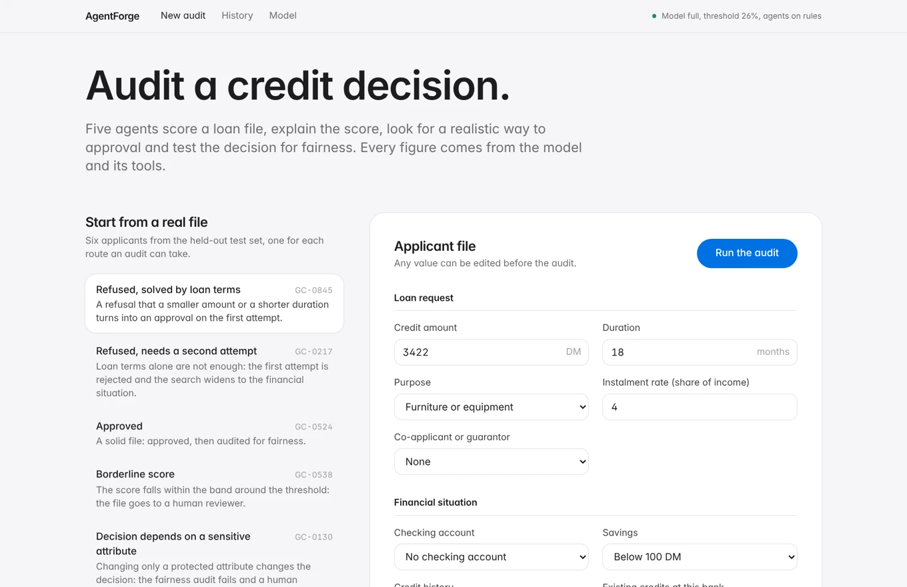
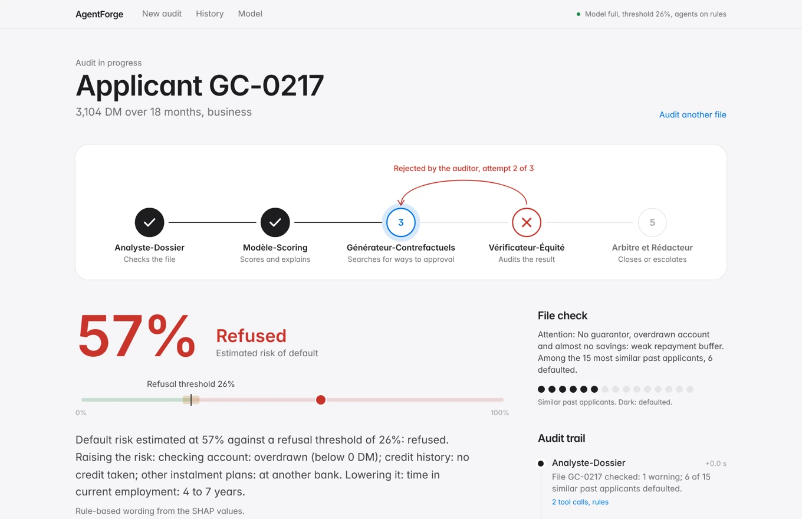
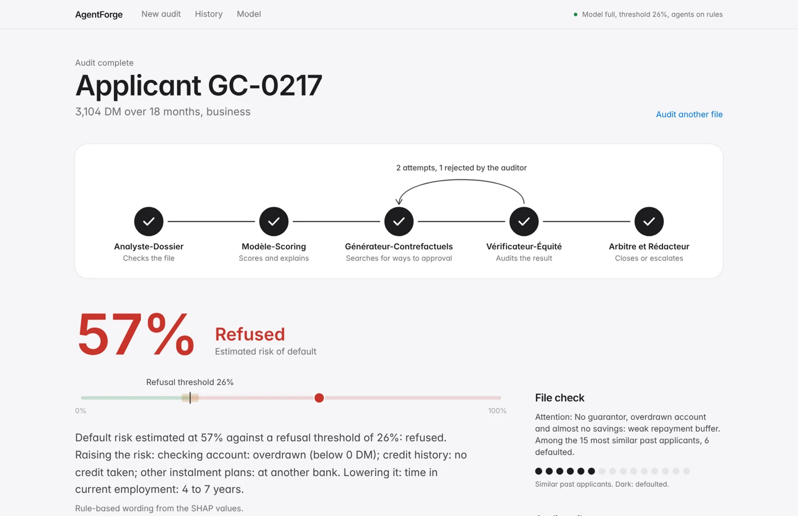

01Audit de crédit multi-agent · en binôme · 2026
AgentForge
Cinq agents IA qui appellent des outils pour auditer une décision de crédit : ils scorent le dossier, l’expliquent avec SHAP, cherchent les plus petits changements menant à une acceptation et testent l’équité. Un agent arbitre re-vérifie tout, peut rejeter une proposition, et transmet les cas sensibles à un humain.
78%des refus reçoivent un chemin vérifié vers l’acceptation, contre 35 % pour modèle + DiCE sans agents
0.806AUC du modèle de scoring LightGBM
22/22dépendances à un attribut sensible détectées et escaladées
Mon rôle : les cinq agents, le client LLM et ses garde-fous, la partie ML et l’interface.
LangGraphLLM · tool callingLightGBMSHAPDiCEFastAPISQLite checkpointsReact



Lance un mini-audit
démo jouet dans le navigateur--
1
Analyste-Dossier2
Modèle-Scoring3
Générateur-Contrefactuels4
Vérificateur-Équité5
Arbitre & RédacteurRègle les curseurs puis lance l’audit. Chaque agent écrit ici ce qu’il fait.
Une formule simplifiée imite le déroulé dans ta page. Le vrai projet utilise un modèle LightGBM, de vrais agents LLM et des contrefactuels DiCE vérifiés.